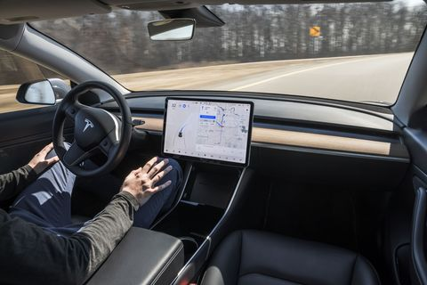

Início "Tesla"
ㅤㅤA Tesla foi fundada em 2003, na cidade de Palo Alto, na Califórnia. Pouco depois, seu atual CEO, Elon Musk, entrou para a empresa, tendo ganhado fama como cofundador da empresa de pagamentos digitais PayPal. Entre os modelos da Tesla, o esportivo Roadster foi o primeiro. Lançado em 2008, o modelo fez uso de uma carroceria da Lotus, adaptada com um motor elétrico. Desde o início, a marca enfrentou o desafio de desenvolver sua capacidade industrial no setor automotivo. Com origem nas empresas de tecnologia, ela não possuía a tradição, conhecimento e experiência em fabricação de carros para enfrentar um mercado dominado por marcas antigas como Ford, Volkswagen e Toyota. Assim, desde os primeiros modelos da Tesla, a marca teve que evoluir rápido e o fez debaixo do escrutínio das concorrentes e desconfiança do público. Afinal, além de ser a “novata”, estava tentando vender carros elétricos. Contudo, entre polêmicas e obstáculos, a Tesla conquistou muitos clientes, ajudando a colocar a categoria de elétricos nas tabelas de automóveis mais vendidos. Em agosto, o último lançamento entre os modelos da Tesla, o Model 3, conquistou a terceira posição entre os carros mais vendidos do Reino Unido. A gama da fabricante se destaca pelo luxo, tecnologias de assistência à direção com o Autopilot, e também pela performance. Outro diferencial dos carros de Elon Musk é a segurança, e todos eles conquistaram nota máxima em testes de colisão feitos por instituições especializadas.
"Autopilot" torna modelos da Tesla semiautônomos
ㅤㅤAlém de serem carros elétricos, os modelos da Tesla também se destacam por serem equipados com muitas tecnologias de assistência à direção. Contudo, ainda não se pode dizer que eles são carros autônomos, se nos basearmos na escala da Sociedade de Engenheiros da Mobilidade (SAE). Embora Elon Musk goste de se vangloriar do avanço de seus carros, eles ainda não conseguem andar sozinhos – nenhum veículo alcançou a autonomia total, ainda. Na escala da SAE J3016, eles podem ser considerados de nível 2, ou “semiautônomos”. Por outro lado, os modelos da Tesla não deixam de ser muito evoluídos nesse quesito, contando com um pacote de recursos chamado Autopilot. Ele inclui uma série de câmeras, sensores e radares que detectam e identificam objetos ao redor do veículo, como outros carros, bicicletas, obstáculos e pedestres. O sistema também reconhece placas de trânsito e as faixas que delimitam as vias. Com essas informações, os modelos da Tesla podem manter a velocidade e frear automaticamente, de acordo com o fluxo do trânsito. Em faixas bem delimitadas, podem se manter dentro da via, fazendo correções na direção do volante. Também conseguem auxiliar o motorista na mudança de faixas.